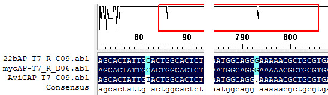
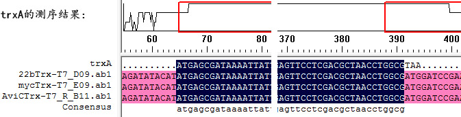

都是从pET22b的NdeI位点切开的，所以AP和trxA都没有pelB信号肽，但可能都自带信号肽。
大肠杆菌碱性磷酸酶(AP): phoA
>22bAP-T7_R_C09.ab1 结论：基本都是正确的（该首尾不同很可能是测序原因），但是和期待的BL21中的AP略有不同，差了好几个碱基，几个氨基酸。
NNNTTNAANNNTTNNTTCCNTCTAGAATAATTTTGTTTAACTTTAAGAAGGAGATATAcatatgAAACAAAGCACTATTGCACTGGCACTCTTACCGTTACTGTTTACCCCTGTGACAAAAGCCCGGACACCAGAAATGCCTGTTCTGGAAAACCGGGCTGCTCAGGGCGATATTACTGCACCCGGCGGTGCTCGCCGTTTAACGGGTGATCAGACTGCCGCTCTGCGTGATTCTCTTAGCGATAAACCTGCAAAAAATATTATTTTGCTGATTGGCGATGGGATGGGGGACTCGGAAATTACTGCCGCACGTAATTATGCCGAAGGTGCGGGCGGCTTTTTTAAAGGTATAGATGCCTTACCGCTTACCGGGCAATACACTCACTATGCGCTGAATAAAAAAACCGGCAAACCGGACTACGTCACCGACTCGGCTGCATCAGCAACCGCCTGGTCAACCGGTGTCAAAACCTATAACGGCGCGCTGGGCGTCGATATTCACGAAAAAGATCACCCAACGATTCTGGAAATGGCAAAAGCCGCAGGTCTGGCGACCGGTAACGTTTCTACCGCAGAGTTGCAGGATGCCACGCCCGCTGCGCTGGTGGCACATGTGACCTCGCGCAAATGCTACGGTCCGAGCGCGACCAGTGAAAAATGTCCGGGTAACGCTCTGGAAAAAGGCGGAAAAGGATCGATTACCGAACAGCTGCTTAACGCTCGTGCCGACGTTACGCTTGGCGGCGGCGCAAAAACCTTTGCTGAAACGGCAACCGCTGGTGAATGGCAGGGAAAAACGCTGCGTGAACAGGCACAGGCGCGTGGTTATCAGTTGGTGAGCGATGCTGCCTCACTGAATTCGGTGACGGAAGCGAATCAGCAAAAACCCCTGCTTGGCCTGTTTGCTGACGGCAATATGCCAGTGCGCTGGCTAGGACCGAAAGCAACGTACCATGGCAATATCGATAAGCCCGCAGTCACCTGTACGCCAAATCCGCAACGTAATGACAGTGTACCACCCTGGCGCAGATGACCGACAAAGCCATTGANTGTGAGTAAAATGAGAAAGGCTTTTTCCTGCAGTGAGGTGNCGTCAATCGATAAACNGGATCATGCTGCNATCNGNTGGNNAATGGCGNNNCGNCGATCTCGATGAGCGTACACGGGCNCTGAATTCCNCTAAAAGGAAGGGNAANN
>22bAP-T7_R_C09.ab1-翻译
MKQSTIALALLPLLFTPVTKARTPEMPVLENRAAQGDITAPGGARRLTGDQTAALRDSLSDKPAKNIILLIGDGMGDSEITAARNYAEGAGGFFKGIDALPLTGQYTHYALNKKTGKPDYVTDSAASATAWSTGVKTYNGALGVDIHEKDHPTILEMAKAAGLATGNVSTAELQDATPAALVAHVTSRKCYGPSATSEKCPGNALEKGGKGSITEQLLNARADVTLGGGAKTFAETATAGEWQGKTLREQAQARGYQLVSDAASLNSVTEANQQKPLLGLFADGNMPVRWLGPKATYHGNIDKPAVTCTPNPQRNDSVPPWRR
>mycAP-T7_R_D06.ab1
NCNTNNANNNNNACNNTCCCTCTAGAATAATTTTGTTTAACTTTAAGAAGGAGATATAcatatgAAACAAAGCACTATTGCACTGGCACTCTTACCGTTACTGTTTACCCCTGTGACAAAAGCCCGGACACCAGAAATGCCTGTTCTGGAAAACCGGGCTGCTCAGGGCGATATTACTGCACCCGGCGGTGCTCGCCGTTTAACGGGTGATCAGACTGCCGCTCTGCGTGATTCTCTTAGCGATAAACCTGCAAAAAATATTATTTTGCTGATTGGCGATGGGATGGGGGACTCGGAAATTACTGCCGCACGTAATTATGCCGAAGGTGCGGGCGGCTTTTTTAAAGGTATAGATGCCTTACCGCTTACCGGGCAATACACTCACTATGCGCTGAATAAAAAAACCGGCAAACCGGACTACGTCACCGACTCGGCTGCATCAGCAACCGCCTGGTCAACCGGTGTCAAAACCTATAACGGCGCGCTGGGCGTCGATATTCACGAAAAAGATCACCCAACGATTCTGGAAATGGCAAAAGCCGCAGGTCTGGCGACCGGTAACGTTTCTACCGCAGAGTTGCAGGATGCCACGCCCGCTGCGCTGGTGGCACATGTGACCTCGCGCAAATGCTACGGTCCGAGCGCGACCAGTGAAAAATGTCCGGGTAACGCTCTGGAAAAAGGCGGAAAAGGATCGATTACCGAACAGCTGCTTAACGCTCGTGCCGACGTTACGCTTGGCGGCGGCGCAAAAACCTTTGCTGAAACGGCAACCGCTGGTGAATGGCAGGGAAAAACGCTGCGTGAACAGGCACAGGCGCGTGGTTATCAGTTGGTGAGCGATGCTGCCTCACTGAATTCGGTGACGGAAGCGAATCAGCAAAAACCCCTGCTTGGCCTGTTTGCTGACGGCAATATGCCAGTGGGNCTTGGCTAAGGACCAAAAGCCACCGTACCATGGCAATATCGATAAGCCCGCAGTCACCTGTACGCCAAATCCGCAACGTAATGAACAGTGTACCAACCCTGGGCGCNAAATGAACCCGAACAAGGCCNTTGGAATTGTTGGAGTTAAAATGGAGAAAGGGCTTTTTNCTGCANNGNNGTGCGTCATCGAATAAACNNNTCATGCTGCNATCNGTGGCNNNNGCNAGACGNCGATCTCGATGAGCGTACNNCGGGNNGCCTGGAATTCGCCTN
>mycAP-T7_R_D06.ab1-翻译
MKQSTIALALLPLLFTPVTKARTPEMPVLENRAAQGDITAPGGARRLTGDQTAALRDSLSDKPAKNIILLIGDGMGDSEITAARNYAEGAGGFFKGIDALPLTGQYTHYALNKKTGKPDYVTDSAASATAWSTGVKTYNGALGVDIHEKDHPTILEMAKAAGLATGNVSTAELQDATPAALVAHVTSRKCYGPSATSEKCPGNALEKGGKGSITEQLLNARADVTLGGGAKTFAETATAGEWQGKTLREQAQARGYQLVSDAASLNSVTEANQQKPLLGLFADGNMPVxLG
>AviCAP-T7_C09.ab1
CNNNTNGACANANANTTTCCCCTCNAGAATAATTTTGTTTAACTTTAAGAAGGAGATATAcatatgAAACAAAGCACTATTGTACTGGCACTCTTACCGTTACTGTTTACCCCTGTGACAAAAGCCCGGACACCAGAAATGCCTGTTCTGGAAAACCGGGCTGCTCAGGGCGATATTACTGCACCCGGCGGTGCTCGCCGTTTAACGGGTGATCAGACTGCCGCTCTGCGTGATTCTCTTAGCGATAAACCTGCAAAAAATATTATTTTGCTGATTGGCGATGGGATGGGGGACTCGGAAATTACTGCCGCACGTAATTATGCCGAAGGTGCGGGCGGCTTTTTTAAAGGTATAGATGCCTTACCGCTTACCGGGCAATACACTCACTATGCGCTGAATAAAAAAACCGGCAAACCGGACTACGTCACCGACTCGGCTGCATCAGCAACCGCCTGGTCAACCGGTGTCAAAACCTATAACGGCGCGCTGGGCGTCGATATTCACGAAAAAGATCACCCAACGATTCTGGAAATGGCAAAAGCCGCAGGTCTGGCGACCGGTAACGTTTCTACCGCAGAGTTGCAGGATGCCACGCCCGCTGCGCTGGTGGCACATGTGACCTCGCGCAAATGCTACGGTCCGAGCGCGACCAGTGAAAAATGTCCGGGTAACGCTCTGGAAAAAGGCGGAAAAGGATCGATTACCGAACAGCTGCTTAACGCTCGTGCCGACGTTACGCTTGGCGGCGGCGCAAAAACCTTTGCTGAAACGGCAACCGCTGGTGAATGGCAGGAAAAACGCTGCGTGAACAGGCACAGGCGCGTGGTTATCAGTTGGTGAGCGATGCTGCCTCACTGAATTCGGTGACGGAAGCGAATCAGCAAAAACCCCTGCTTGGCCTGTTTGCTGACGGCAATGTGCCAGTGCGCTGGCTAGGACCGAAAGCAACGTACCATGGCAATATCGATAAGCCCGCAGTCACCTGTACGCCAAATCCGCAACGTAATGACAGTGTACCACCCTGGCGCAGATGACCGACAAGGCATTGAAATGGTTGAGTAAAAATTGAGAAAGGCTTTTTCTTGCAGGTTGAAGGTGCGTCACATCTGAATATAAACACGGNTNCN
>AviCAP-T7_C09.ab1-翻译
MKQSTIVLALLPLLFTPVTKARTPEMPVLENRAAQGDITAPGGARRLTGDQTAALRDSLSDKPAKNIILLIGDGMGDSEITAARNYAEGAGGFFKGIDALPLTGQYTHYALNKKTGKPDYVTDSAASATAWSTGVKTYNGALGVDIHEKDHPTILEMAKAAGLATGNVSTAELQDATPAALVAHVTSRKCYGPSATSEKCPGNALEKGGKGSITEQLLNARADVTLGGGAKTFAETATAGEWQEKRCVNRHRRVVISW
大肠杆菌 硫氧还原蛋白(trxA)
>22bTrx-T7_D09.ab1
GNNNNGNANNNTANNNTTCCCCTCTAGAAATAATTTTGTTTAACTTTAAGAAGGAGATATAcatatgAGCGATAAAATTATTCACCTGACTGACGACAGTTTTGACACGGATGTACTCAAAGCGGACGGGGCGATCCTCGTCGATTTCTGGGCAGAGTGGTGCGGTCCGTGCAAAATGATCGCCCCGATTCTGGATGAAATCGCTGACGAATATCAGGGCAAACTGACCGTTGCAAAACTGAACATCGATCAAAACCCTGGCACTGCGCCGAAATATGGCATCCGTGGTATCCCGACTCTGCTGCTGTTCAAAAACGGTGAAGTGGCGGCAACCAAAGTGGGTGCACTGTCTAAAGGTCAGTTGAAAGAGTTCCTCGACGCTAACCTGGCGATggatccGAATTCGAGCTCCGTCGACAAGCTTGCGGCCGCACTCGAGCACCACCACCACCACCACTGAGATCCGGCTGCTAACAAAGCCCGAAAGGAAGCTGAGTTGGCTGCTGCCACCGCTGAGCAATAACTAGCATAACCCCTTGGGGCCTCTAAACGGGTCTTGAGGGGTTTTTTGCTGAAAGGAGGAACTATATCCGGATTGGCGAATGGGACGCGCCCTGTAGCGGCGCATTAAGCGCGGCGGGTGTGGTGGTTACGCGCAGCGTGACCGCTACACTTGCCAGCGCCCTAGCGCCCGCTCCTTTCGCTTTCTTCCCTTCCTTTCTCGCCACGTTCGCCGGCTTTCCCCGTCAAGCTCTAAATCGGGGGCTCCCTTTAGGGTTCCGATTTAGTGCTTTACGGCACCTCGACCCCAAAAAACTTGATTAGGGTGATGGTTCACGTAGTGGGCCATCGCCCTGATAGACGGTTTTTCGCCCTTTGACGTTGGAGTCCACGTTCTTTAATAGTGGACTCTTGTTCCAAACTGGAACAACACTCAACCCTATCTCGGTCTATTCTTTTGATTTATAAGGGATTTGCCGATTTCGGCCTATTGGTTAAAAATGAGCTGATTTACAAATTTANGCGATTTACAATATTANGCTTACATTTAGTGGCACTTTCGGGAAATGGNGCGCCGAACCCTATTTGTTTANTTTTTCT
>mycTrx-T7_E09.ab1
GNNNTANNNGGGNTCNNTTCNCCTCTANAATNATTTTGTTTAACTTTAAGAAGGAGATATAcatatgAGCGATAAAATTATTCACCTGACTGACGACAGTTTTGACACGGATGTACTCAAAGCGGACGGGGCGATCCTCGTCGATTTCTGGGCAGAGTGGTGCGGTCCGTGCAAAATGATCGCCCCGATTCTGGATGAAATCGCTGACGAATATCAGGGCAAACTGACCGTTGCAAAACTGAACATCGATCAAAACCCTGGCACTGCGCCGAAATATGGCATCCGTGGTATCCCGACTCTGCTGCTGTTCAAAAACGGTGAAGTGGCGGCAACCAAAGTGGGTGCACTGTCTAAAGGTCAGTTGAAAGAGTTCCTCGACGCTAACCTGGCGATggatccGAATTCGAGCTCCGTCGACAAGCTTGCGGCCGCACTCGAGGAACAAAAACTCATCTCAGAAGAGGATCTGAATAGCGCCGTTGATCACCACCACCACCACCACTGAGATCCGGCTGCTAACAAAGCCCGAAAGGAAGCTGAGTTGGCTGCTGCCACCGCTGAGCAATAACTAGCATAACCCCTTGGGGCCTCTAAACGGGTCTTGAGGGGTTTTTTGCTGAAAGGAGGAACTATATCCGGATTGGCGAATGGGACGCGCCCTGTAGCGGCGCATTAAGCGCGGCGGGTGTGGTGGTTACGCGCAGCGTGACCGCTACACTTGCCAGCGCCCTAGCGCCCGCTCCTTTCGCTTTCTTCCCTTCCTTTCTCGCCACGTTCGCCGGCTTTCCCCGTCAAGCTCTAAATCGGGGGCTCCCTTTAGGGTTCCGATTTAGTGCTTTACGGCACCTCGACCCCAAAAAACTTGATTAGGGTGATGGTTCACGTAGTGGGCCATCGCCCTGATAGACGGTTTTTCGCCCTTTGACGTTGGAGTCCACGTTCTTTAATAGTGGACTCTTGTTCCAAACTGGAACAACACTCAACCCTATCTCGGTCTATTCTTTGATTTATNGNATTTTGCCGATTTCGGCCTATTGNNAAAATGAGCTGATTTACAAAATTAACGCGAATTTAACAAAAATATTAACGCTTACAATTTAAGN
>AviCTrx-T7_F09.ab1-(有错配，峰图也不行，已经重测)
>AviCTrx-T7_R_B11.ab1
NNNNNANNGNNNNTTCCCCTCTAGANNAATTTTGTTTAACTTTAAGAAGGAGATATAcatatgAGCGATAAAATTATTCACCTGACTGACGACAGTTTTGACACGGATGTACTCAAAGCGGACGGGGCGATCCTCGTCGATTTCTGGGCAGAGTGGTGCGGTCCGTGCAAAATGATCGCCCCGATTCTGGATGAAATCGCTGACGAATATCAGGGCAAACTGACCGTTGCAAAACTGAACATCGATCAAAACCCTGGCACTGCGCCGAAATATGGCATCCGTGGTATCCCGACTCTGCTGCTGTTCAAAAACGGTGAAGTGGCGGCAACCAAAGTGGGTGCACTGTCTAAAGGTCAGTTGAAAGAGTTCCTCGACGCTAACCTGGCGATggatccGAATTCGAGCTCCGTCGACAAGCTTGCGGCCGCACTCGAGGGCCTGAACGATATCTTTGAAGCGCAGAAAATTGAATGGCATGAACACCACCACCACCACCACTGAGATCCGGCTGCTAACAAAGCCCGAAAGGAAGCTGAGTTGGCTGCTGCCACCGCTGAGCAATAACTAGCATAACCCCTTGGGGCCTCTAAACGGGTCTTGAGGGGTTTTTTGCTGAAAGGAGGAACTATATCCGGATTGGCGAATGGGACGCGCCCTGTAGCGGCGCATTAAGCGCGGCGGGTGTGGTGGTTACGCGCAGCGTGACCGCTACACTTGCCAGCGCCCTAGCGCCCGCTCCTTTCGCTTTCTTCCCTTCCTTTCTCGCCACGTTCGCCGGCTTTCCCCGTCAAGCTCTAAATCGGGGGCTCCCTTTAGGGTTCCGATTTAGTGCTTTACGGCACCTCGACCCCAAAAAACTTGATTAGGGTGATGGTTCACGTAGTGGGCCATCGCCCTGATAGACGGTTTTTCGCCCTTTGACGTTGGAGTCCACGTTCTTTATAGTGGACTCTTGTTCCAAACTGGNACAACACTCANCCTATCTCGGTCTTATTCTTTTGATTTATAAGGATTTTGCCGATTTCGGCCTATTGGTTAAAAAATGAGCTGATTTAACAAAAATTTAACGCGAAT
结论： （1）trx插入基本都是正确的，但是最后一个可能是错的，已经重新测序。 （2）重新测序表明，序列正确。